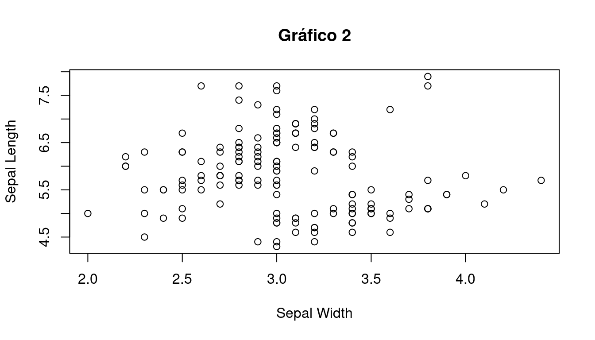
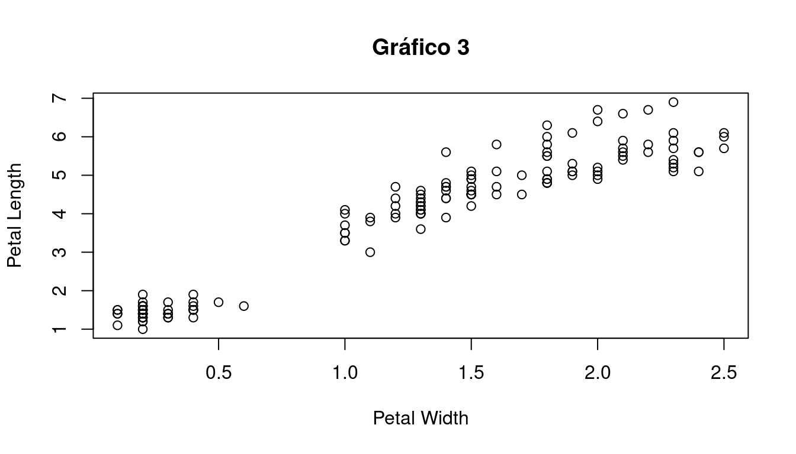

Capítulo 7 Ejercicio 3
Las ganancias de peso en Kg de 40 cerdos en 60 días fueron:
- Confeccione una tabla de frecuencias absoluta e interprete los resultados.
- Realice una tabla de frecuencias relativas.
A continuación se presentan el histograma, polígono de frecuencias y ojiva correspondientes a la tabla de distribuciones de frecuencias


## x RCF
## 1 10 0.000
## 2 15 0.050
## 3 20 0.125
## 4 25 0.275
## 5 30 0.425
## 6 35 0.800
## 7 40 0.850
## 8 45 0.900
## 9 50 0.900
## 10 55 1.000
## 11 60 1.000Para cada ítem seleccionar el gráfico que corresponda e indicar
- El porcentaje de cerdos que ganó, como máximo, 45 kg.
- El porcentaje de cerdos que ganó en promedio 24.07 kg.
- Los pesos promedio más y menos frecuentes.
7.0.1 Práctica en R
- Para ingresar estos datos en R, cree un vector numérico con estos datos.
- Para crear una tabla de frecuencias absolutas, use la función table().
- Para crear una tabla de frecuencias relativas, use la función prop.table().
- Para realizar un histograma, use la función hist().
- Para realizar un polígono de frecuencias, haga uso de la librería agricolae.
- Para realizar un gráfico de ojiva, haga uso de la librería agricolae.